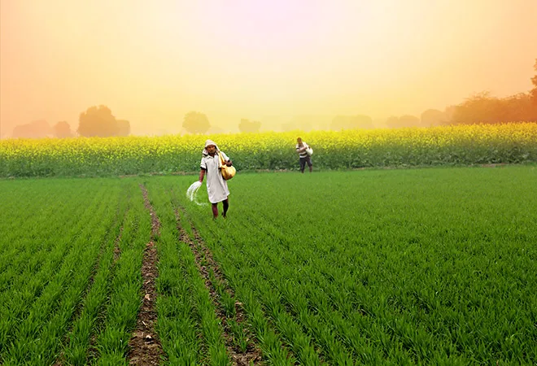
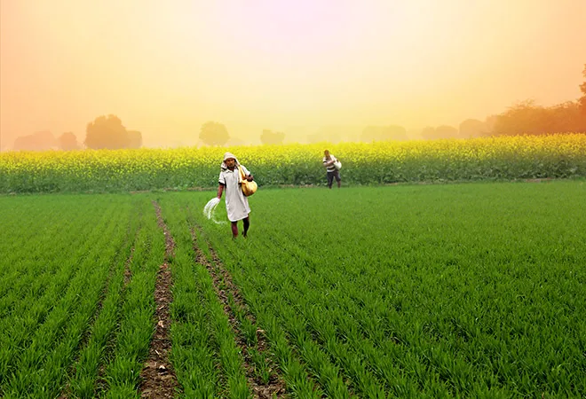

Indian Agriculture is a comprehensive educational and informational platform created to support farmers, agriculture students, and learners with accurate, practical, and structured farming knowledge.
Our platform is specially designed for beginners who want to start farming from zero as well as experienced farmers looking to upgrade their traditional practices using modern and scientific techniques.

 
